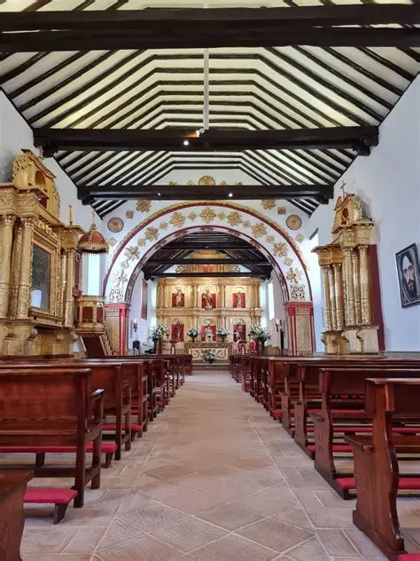
01 PATRIMONIO⛪ Templo Doctrinero
Uno de los elementos históricos y religiosos más representativos de Sáchica.
TIERRA DE HISTORIA · CULTURA · NATURALEZA
Un recorrido por la historia, cultura, naturaleza y patrimonio de uno de los municipios más interesantes de Boyacá.
Sáchica conserva elementos históricos, religiosos, arqueológicos y culturales que hacen parte de la identidad de Boyacá.
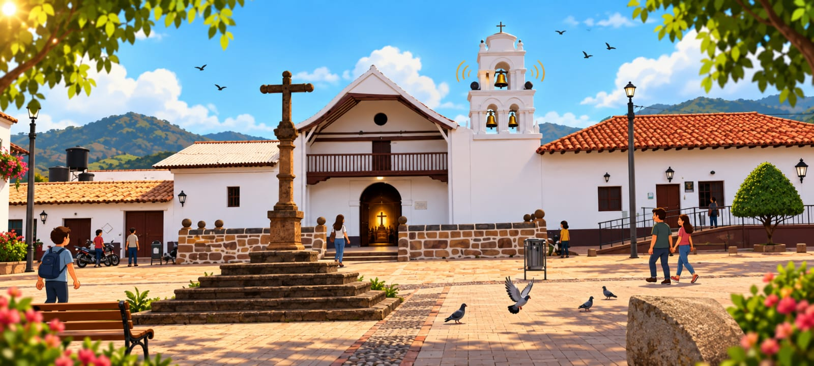
En el municipio se encuentran lugares como el Templo Doctrinero, la Cruz Atrial, la Piedra del Castigo y las pinturas rupestres.
También existen atractivos relacionados con la naturaleza, la peregrinación y la prehistoria.
CONOCER LOS LUGARESPulsa “Conocer más” para ver la página del lugar o “Ver ruta” para iniciar el recorrido animado.

01 PATRIMONIOUno de los elementos históricos y religiosos más representativos de Sáchica.
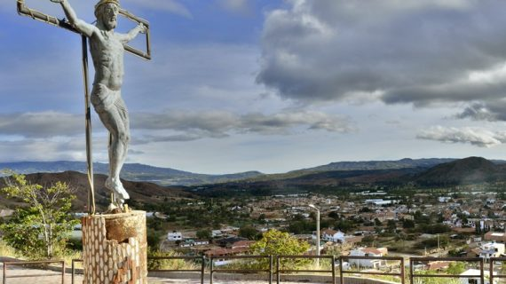
02 RELIGIOSOSendero relacionado con peregrinaciones, paisaje y tradición religiosa.
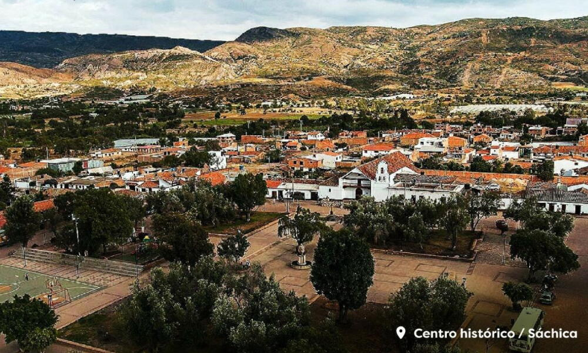
03 CULTURAPunto central para comenzar un recorrido por el patrimonio del municipio.
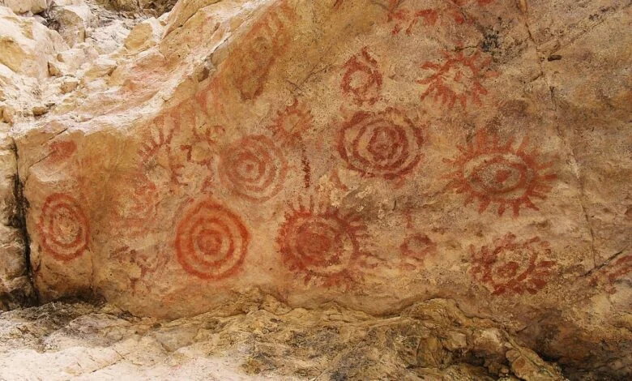
04 ARQUEOLOGÍAManifestaciones rupestres que conectan el territorio con su pasado precolombino.
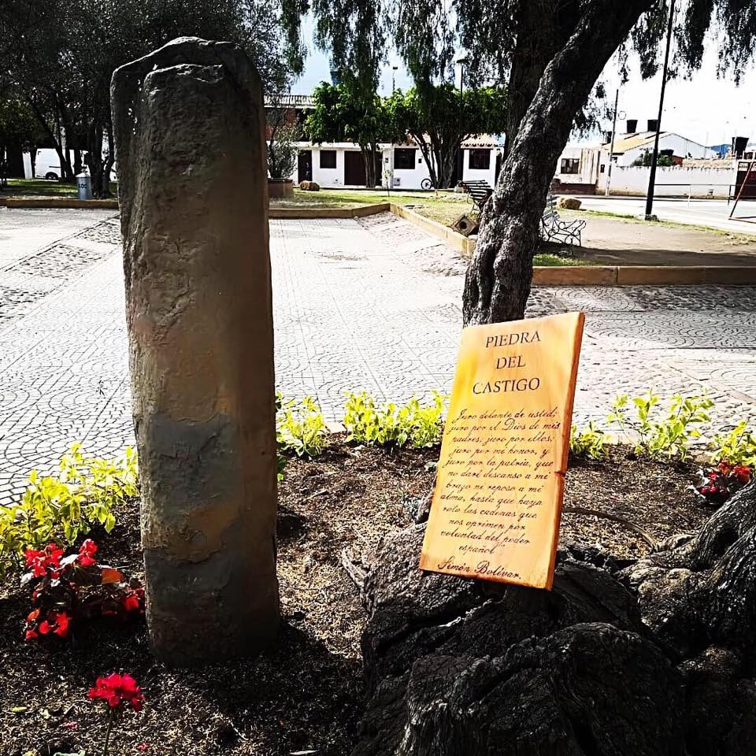
05 HISTORIAElemento histórico situado dentro del entorno patrimonial del centro de Sáchica.
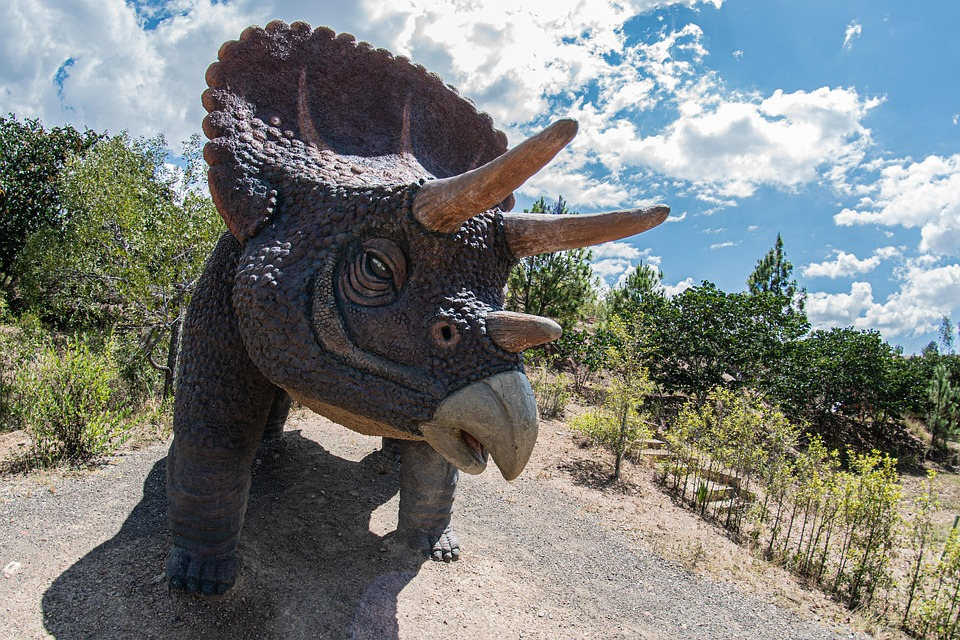
06 PREHISTORIA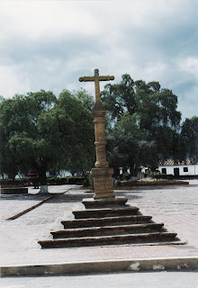
07 PATRIMONIOCruz monolítica frente al conjunto doctrinero y parte del patrimonio local.
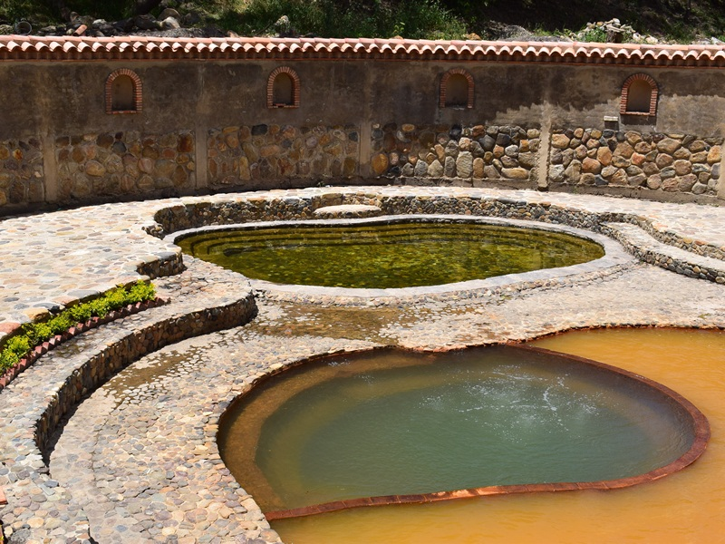
08 NATURALEZADescubre experiencias que combinan prehistoria, gastronomía, agricultura, tradición, aventura, naturaleza y paisaje.
Visita los atractivos relacionados con los dinosaurios y descubre el mundo prehistórico de la región.
CONOCER MÁS →Prueba una deliciosa gallina preparada al estilo tradicional y conoce el Festival de la Gallina.
CONOCER MÁS →Recorre el paisaje rural y conoce algunos de los cultivos que forman parte de la actividad agrícola de Sáchica.
CONOCER MÁS →Conoce una de las tradiciones religiosas más importantes de Sáchica y vive sus diferentes actividades.
CONOCER MÁS →Disfruta de un mirador con paisajes de Sáchica y actividades recreativas como cuatrimotos y go-karts.
CONOCER MÁS →Disfruta del paisaje de Sáchica, toma fotografías y conoce un espacio diferente al aire libre.
CONOCER MÁS →Descubre un huerto de olivos, conoce este cultivo característico de la zona y disfruta del paisaje rural.
CONOCER MÁS →Recorre cultivos de uva, conoce cómo se desarrolla la vid y disfruta del paisaje del valle.
CONOCER MÁS →Disfruta de un espacio recreativo al aire libre para compartir, recorrer y vivir una experiencia diferente.
CONOCER MÁS →Conoce algunos lugares donde puedes detenerte a comer durante tu recorrido por el municipio.
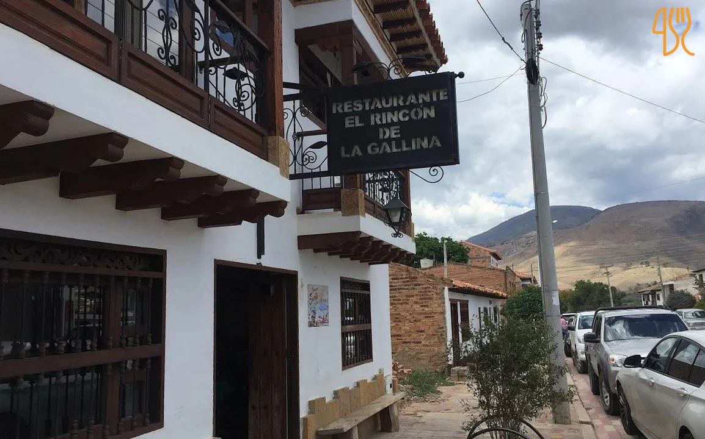
RESTAURANTEUna opción para disfrutar de sabores tradicionales durante tu visita a Sáchica.
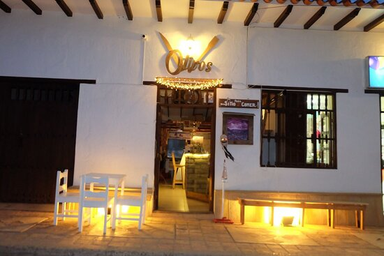
RESTAURANTEUna alternativa gastronómica para compartir y disfrutar diferentes preparaciones.
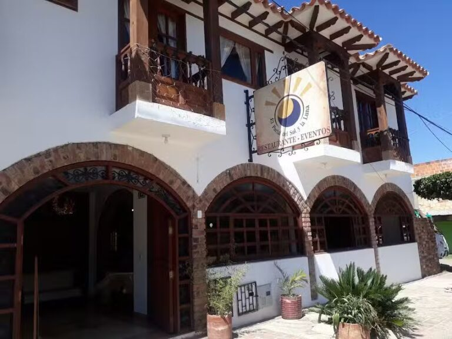
RESTAURANTEUna opción para detenerse a comer durante un recorrido turístico por el municipio.
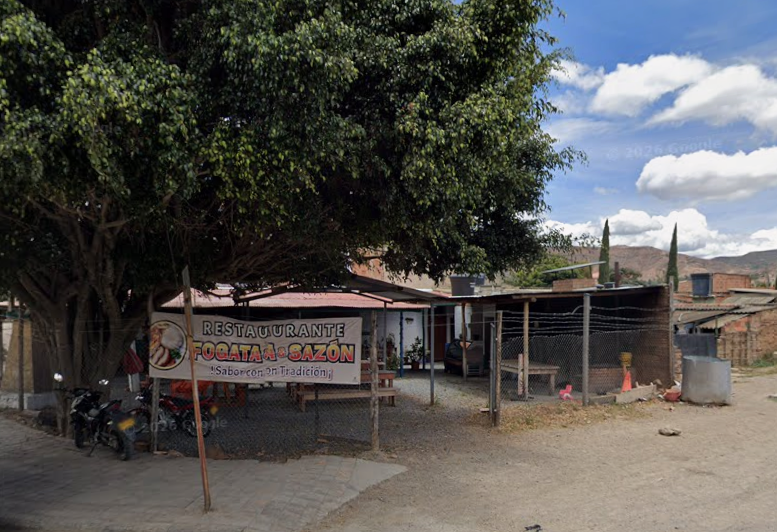
RESTAURANTEUna alternativa para complementar el recorrido turístico con una experiencia gastronómica.
Conocer un municipio también es descubrir sus sabores, sus costumbres y la manera en que recibe a sus visitantes.
Después de recorrer Sáchica, encuentra opciones de alojamiento para descansar y continuar disfrutando del municipio.
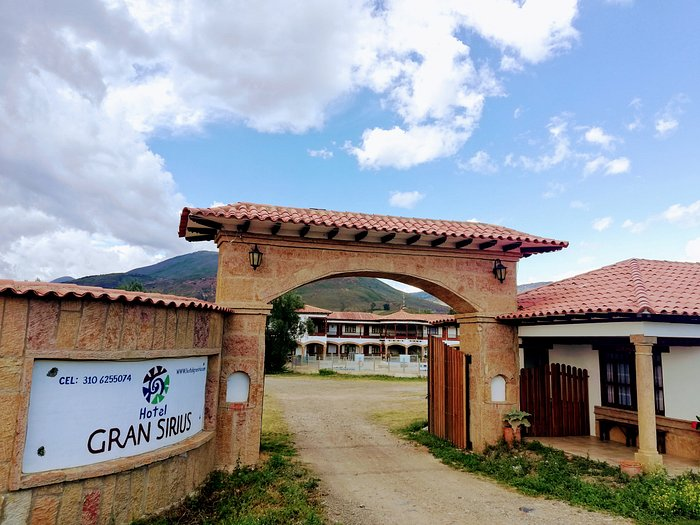
HOTELUna opción de alojamiento en Sáchica para descansar después de conocer los diferentes atractivos del municipio.
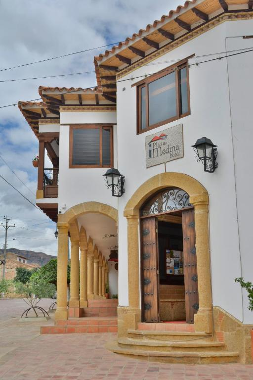
HOTELUna alternativa para hospedarse dentro de Sáchica y tener un punto de descanso durante el recorrido turístico por el municipio.
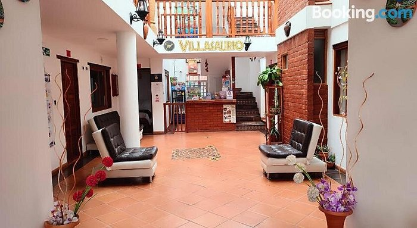
HOTELOtra opción de alojamiento en Sáchica para quienes desean descansar mientras conocen los atractivos de la región.
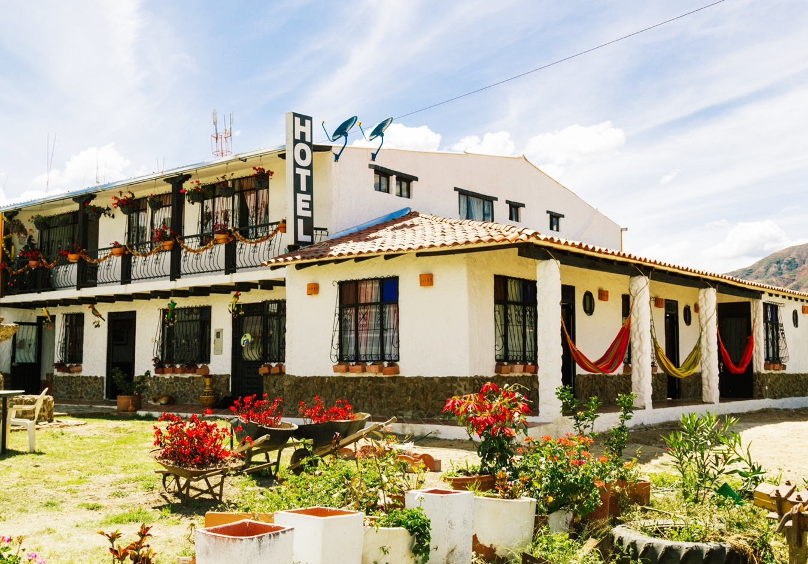
HOTELUn lugar para complementar la visita al municipio con una opción de hospedaje dentro de Sáchica.
Encuentra un lugar para descansar y continúa descubriendo los paisajes, la cultura y los atractivos del municipio.
Elige un destino. El caminante seguirá el recorrido animado y aparecerá la opción para abrir la navegación real.
Pulsa cualquiera de los botones para iniciar la ruta.
La región de Villa de Leyva y sus alrededores es reconocida por su patrimonio paleontológico.
La paleontología es uno de los elementos más llamativos para comprender el pasado natural de esta región.
Algunos detalles interesantes para complementar tu recorrido.
El territorio tuvo presencia indígena antes de la llegada de los españoles.
El conjunto doctrinero y la Cruz Atrial forman parte del patrimonio cultural del municipio.
Las pinturas rupestres están asociadas a formaciones rocosas y antiguos habitantes.
La agricultura tiene una presencia importante en el paisaje y economía local.
La zona del Alto Ricaurte es conocida por su patrimonio geológico y fósil.
Sáchica combina relieve montañoso, clima seco, patrimonio y zonas rurales.
Una mirada a algunos de sus atractivos.
 Sáchica
Sáchica
 Templo Doctrinero
Templo Doctrinero
 Monte Calvario
Monte Calvario
 Gondava
Gondava
 Piedra del Castigo
Piedra del Castigo
Sáchica, Boyacá, Colombia.